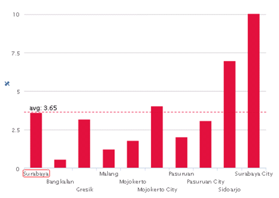
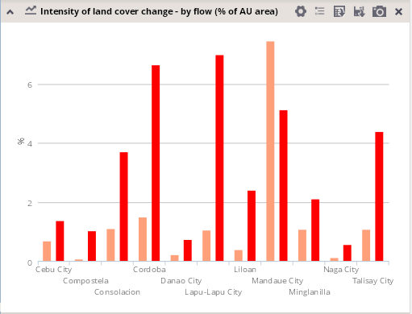

The column chart is suitable for displaying most attribute types and comparing their values – absolute or relative – for different units.
For each unit, the size of the corresponding column shows the value of the selected indicator.
Normalization and stacking are enabled for column charts, is displaying of average values of the sets of units and attributes.
 
Column charts are a good solution for the comparison of values of one indicator in different analytical units. It can be also used for comparison of values of different indicators; however, these indicators have to be carefully considered, with respect to their type (absolute or relative), units and also range of values. Stacking functionality incorporated in column chart options enables the user to obtain a more detailed overview of indicators sub-categories proportion and still preserve the information about the overall indicator quantity (e.g. proportion and quantity of different change flows in the frame of total land cover change).